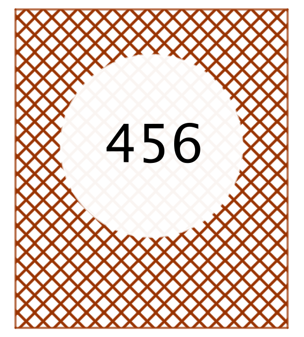

Problem of the Week
Problem E and Solution
Such a Card
Problem
Johanna has a deck of cards with the following properties:
Each card in the deck has a positive three-digit integer on it.
There is exactly one card in the deck for every three-digit positive integer.
Johanna randomly selects a card from the deck of cards. Determine the probability that the sum of the digits of the integer on this card is 15.

Solution
To begin, we need to determine the number of cards in the deck. Since there is a card for each three-digit positive integer, there are 900 cards in the deck. We must be careful calculating this number. There are 999 positive integers less than 1000. Of this set, 90 are two-digit numbers and 9 are single-digit numbers. Therefore there are \(999-90-9=900\) three-digit positive integers.
Next we need to determine the digit combinations on a card that have a sum of 15. We will determine the possibilities using cases. Then we will look at the specific groups of numbers that sum to 15 to count the number of cards produced from each group.
One of the digits on the card is a 0. The other two digits on the card must add to 15. This leads to two groups of numbers: \((0,6,9)\) and \((0,7,8)\).
One of the digits on the card is a 1 but the number does not contain a 0. The other two digits on the card must add to 14. This leads to three groups of numbers: \((1,5,9)\), \((1,6,8)\) and \((1,7,7)\).
One of the digits on the card is a 2 but the number does not contain a 0 or 1. The other two digits on the card must add to 13. This leads to three groups of numbers: \((2,4,9)\), \((2,5,8)\) and \((2,6,7)\).
One of the digits on the card is a 3 but the number does not contain a 0, 1, or 2. The other two digits on the card must add to 12. This leads to four groups of numbers: \((3,3,9)\), \((3,4,8)\), \((3,5,7)\) and \((3,6,6)\).
One of the digits on the card is a 4 but the number does not contain a 0, 1, 2, or 3. The other two digits on the card must add to 11. This leads to two groups of numbers: \((4,4,7)\) and \((4,5,6)\).
One of the digits on the card is a 5 but the number does not contain a 0, 1, 2, 3, or 4. The other two digits on the card must add to 10. This leads to only one group of numbers: \((5,5,5)\).
Now that we have the groups of numbers, we can determine the number of cards that can be created from each group of three numbers. We will do this again with cases: groups containing a 0, groups containing three distinct numbers but not 0, groups containing exactly two numbers the same but not 0, and groups containing three numbers the same but not 0.
One of the numbers on the card is 0. Earlier we found that there were two such groups: \((0,6,9)\) and \((0,7,8)\). This is a special case since 0 cannot appear in the number as the hundreds digit for the number to be a three-digit number. For each of the two groups of numbers, the 0 can be placed in two ways, in the tens digit or the units digit. Once the 0 is placed, the other two numbers can be placed in the remaining two spots in two ways. Each group can form \(2\times 2=4\) three-digit numbers. Since there are two groups, there are \(2\times 4=8\) cards in the deck that contain a 0 and add to 15.
All three digits on the card are different and the number does not contain a 0. From the earlier cases there are eight groups in which all three numbers are different: \((1,5,9)\), \((1,6,8)\), \((2,4,9)\), \((2,5,8)\), \((2,6,7)\), \((3,4,8)\), \((3,5,7)\), and \((4,5,6)\). For each of these groups, the hundreds digit can be filled three ways. For each of these three choices for hundreds digit, the tens digit can be filled two ways. Once the hundreds digit and tens digit are selected, the units digit must get the third number. So each group can form \(3\times 2=6\) different numbers. Since there are eight groups, there are \(8\times 6=48\) cards in the deck that contain three different digits other than 0 that add to 15.
Two of the digits on the card are the same and the number does not contain a 0. From the earlier cases, there are four groups of numbers in which exactly two of the numbers in the group are the same: \((1,7,7)\), \((3,3,9)\), \((3,6,6)\), and \((4,4,7)\). For each of these groups, the unique number can be placed in one of three spots. Once the unique number is placed the other two numbers must go in the remaining two spots. So each group can form three different numbers. Since there are four groups, there are \(4\times 3=12\) cards in the deck that do not contain a 0 but contain two digits the same and whose digits add to 15.
The three digits on the card are the same. From the earlier cases we discovered only one such group: \((5,5,5)\). Only one card can be produced using the numbers from this group.
Combining the counts from the above four cases, there are \(8+48+12+1=69\) cards in the deck with a digit sum of 15. Therefore, the probability that Johanna selects card whose digits add to 15 is \(\dfrac{69}{900}=\dfrac{23}{300}\). This translates to approximately a \(7.7\%\) chance.
A game is considered fair if there is close to a 50% chance of winning. If Johanna was playing a game where she can win by drawing a card whose digits sum to 15, then this game is definitely not fair. If you changed the game to “if the card chosen has a sum that is divisible by 5”, there is about a 20% chance of winning. This is better but still not fair.
Can you create a game using this specific deck of cards that is reasonably fair and fun to play?